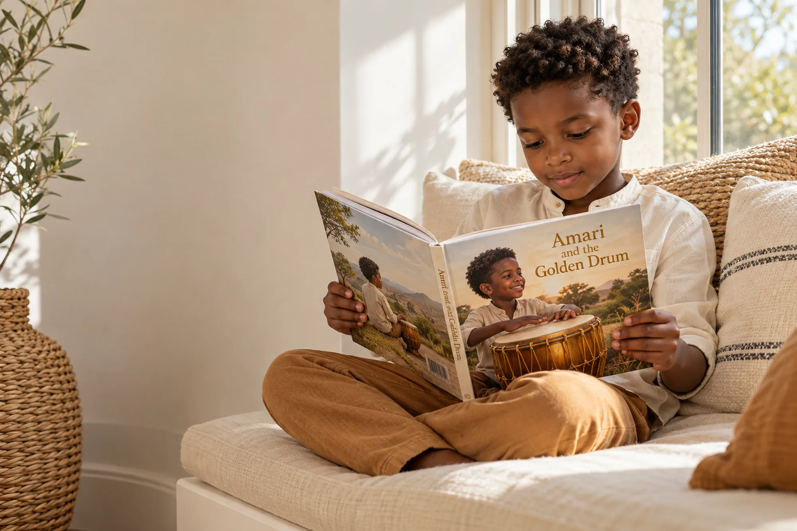

First day of school: 8 ways to help your child feel brave
A first day is a big step for children and parents alike. A little preparation in the weeks before can turn nerves into excitement.
1. Visit before the first day
Walk or drive past the school, look at the gate and the playground, and talk about what happens inside.
2. Practise the morning routine
A few practice mornings, waking up, getting dressed and having breakfast on time, make the real day feel familiar.
3. Read stories about courage
Stories about trying something new help children name their feelings. When the hero shares their name and face, the message lands even closer to home. See stories for new beginnings.
4. Create a goodbye ritual
A special hug, a high five or a secret word. The same goodbye every day gives a predictable, comforting moment.
5. Keep goodbyes short and warm
Lingering can make it harder. Say goodbye with a smile, tell them when you will be back, and go.
6. Pack a small comfort
A family photo or a little note in their bag can be a quiet reminder that home is close.
7. Ask specific questions after school
Instead of "How was school?", try "What made you laugh today?" or "Who did you sit next to at snack time?"
8. Celebrate the first week
A small celebration at the end of the first week shows them how brave they have been.